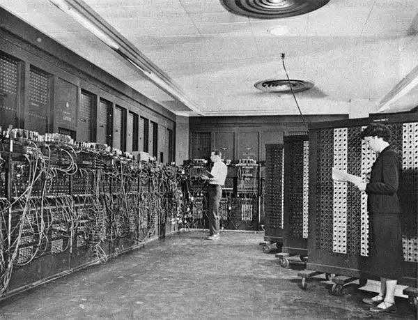

Primeiro computador – Origem e história do famoso ENIAC
Saiba como surgiu o ENIAC: primeiro computador e calculadora eletrônica inventado por militares e como ele revolucionou o campo da tecnologia.
Fonte:Pinterest
Quem está acostumado aos modernos e compactos computadores modernos, nem consegue imaginar o que foi o primeiro computador já inventado: o gigante e potente ENIAC. ENIAC é abreviação de Electronic Numerical Integrator And Computer (ou em português Computador e Integrador Numérico Eletrônico). Para esclarecer, ele foi usado para fins gerais, como uma éspecie de calculadora para solução de problemas numéricos.
O ENIAC foi inventado por John Presper Eckert e John Mauchly, ambos da Universidade da Pensilvânia, para calcular tabelas de tiro de artilharia para o Laboratório de Pesquisa Balística do Exército dos Estados Unidos. Além disso, sua construção começou em 1943 e não foi concluída até 1946. Contudo, embora não tenha sido concluído até o final da Segunda Guerra Mundial, o ENIAC foi criado para ajudar as tropas americanas contra o exercito alemão.
Em 1953, a Burroughs Corporation construiu uma memória de núcleo magnético de 100 palavras, que foi adicionada ao ENIAC para fornecer recursos de memória. Logo, em 1956, ao final de sua operação, o ENIAC ocupava cerca de 180m² e consistia em quase 20.000 tubos de vácuo, 1.500 interruptores, bem como 10.000 capacitores e 70.000 resistores.
Dessa forma, o ENIAC também consumia muita energia, cerca de 200 quilowatts de eletricidade. Aliás, a máquina pesava mais de 30 toneladas e custava quase 500 mil dólares. Por outro lado, o que os humanos levam horas e dias para calcular, o ENIAC podia fazer em questão de segundos a minutos.
Como o primeiro computador do mundo funcionava?
Fonte: Pinterest
Desse modo, o que distinguia o ENIAC dos
dispositivos
existentes da época era que, apesar de funcionar em velocidades eletrônicas, ele também podia ser programado para atender a diferentes instruções. No entanto, eram necessários vários dias para religar a máquina com novas instruções, mas apesar de todo o trabalho para operá-lo, não havia como negar que o ENIAC foi o primeiro computador eletrônico de uso geral do mundo.Em 14 de fevereiro de 1946, o primeiro computador da história foi anunciado ao público pelo Departamento de Guerra dos Estados Unidos. Inclusive, um dos primeiros comandos que a máquina executou, foram cálculos para a construção de uma bomba de hidrogênio. Neste sentido, o ENIAC levou apenas 20 segundos e foi verificado em relação a uma resposta obtida após quarenta horas de trabalho com uma calculadora mecânica.
Além desta operação, o primeiro computador inventado fez vários outros cálculos como por exemplo:
5 curiosidades sobre a primeira máquina de computação
1. O ENIAC podia realizar operações aritméticas e de transferência, ambas ao mesmo tempo
Fonte: Pinterest
2. A preparação do ENIAC para a programação de novos problemas podia levar vários dias
Fonte: Pinterest
3. Cálculos de divisão e raiz quadrada funcionavam por subtração e adição repetidas
 Fonte: Pinterest4. O ENIAC foi o modelo a partir do qual a maioria dos outros computadores foram desenvolvidos
Fonte: Pinterest5. Os elementos mecânicos do ENIAC, incluem o leitor de cartões IBM para entrada, um cartão perfurado para saída, bem como 1.500 botões interruptores
Fonte: PinterestIBM e as novas tecnologias
O primeiro computador já inventado foi, sem dúvida, a origem da indústria de computadores comerciais tanto dos Estados Unidos como de todo o mundo. Entretanto, seus inventores, Mauchly e Eckert, nunca alcançaram fortuna com seu trabalho e a empresa da dupla afundou em diversos problemas financeiros, até ser vendida por um preço abaixo do que realmente valia. Em 1955, a IBM vendia mais computadores do que o UNIVAC e, na década de 1960, o grupo de oito empresas que vendiam computadores era conhecido como “IBM e os sete anões”.
Por fim, a IBM cresceu tanto que o governo federal moveu vários processos contra ela de 1969 a 1982. Além disso, foi a IBM, a primeira empresa a contratar a desconhecida, mas agressiva, Microsoft para fornecer o software para seu computador pessoal. Ou seja, este lucrativo contrato permitiu que a Microsoft se tornasse tão dominante e permanecesse atuando no ramo da tecnologia e lucrando nele até os dias atuais.